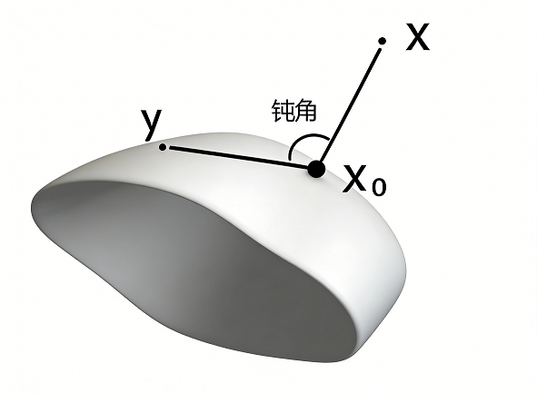

内积空间
基本概念
内积是欧氏空间中“角度”概念的推广.
内积空间
设 `X` 是 `K = RR` 或 `CC` 上的线性空间,
称二元函数 `f(*,*): X xx X to K` 为共轭双线性函数, 如果它满足
`AA alpha, beta in K`, `AA x, y, z in X`:
- 左槽线性: `f(alpha x + beta y, z) = alpha f(x, z) + beta f(y, z)`;
- 右槽共轭线性: `f(z, alpha x + beta y) = bar alpha f(z, x) + bar beta f(z, y)`.
如果它还满足
- 正定性: `(AA x in X)`, `(x, x) ge 0`, 且 `(x, x) = 0 iff x = 0`;
- 共轭对称性: `(AA x, y in X)`, `(x, y) = bar ((y, x))`;
则称 `X` 为内积空间, `f(*,*)` 为 `X` 上的内积.
我们一般省略字母 `f`, 将内积简单记为 `(*,*)`.
共轭对称性的等价条件
设 `f` 是 `X` 上的共轭双线性函数, 则 `f` 满足共轭对称性的等价条件是
`f(x, x) in RR`, `quad AA x in X`.
称 `q(x) := f(x, x)` 是 `X` 上由 `f` 诱导的二次型.
只证充分性. `AA x, y in X`,
`f(x, y) + f(y, x)`
`= f(x+y, x+y) - f(x, x) - f(y, y)`
`in RR`.
用 `"i"y` 代替上式的 `y` 得到
`f(x, "i"y) + f("i"y, x)`
`= -"i"f(x, y) + "i"f(y, x)`
`in RR`.
以上两式等价于
`f(x, y) + f(y, x) = bar(f(x, y)) + bar(f(y, x))`,
`-"i"f(x, y) + "i"f(y, x) = "i"bar(f(x, y)) -"i"bar(f(y, x))`.
第二式乘以 `"i"`, 再加上第一式得到
`2 f(x, y) = 2 bar(f(y, x))`.
内积诱导的范数
Cauchy-Schwarz 不等式
在内积空间 `X` 中引入 `||x||` `= (x, x)^(1//2)`, 则有
`|(x, y)| le ||x|| ||y||`, `quad AA x, y in X`.
其中等号成立当且仅当 `x, y` 线性相关.
可以证明 `||*||` 是范数, 故内积空间是赋范线性空间.
-
不妨设 `y != 0`.
`AA t in K`, 考虑二次型
`0 le (x + t y, x + t y)`
`= (x, x) + bar t(x, y) + t(y, x) + |t|^2 (y, y)`.
特别取 `t = -(x, y)//(y, y)`, 则 `bar t = -(y, x)//(y, y)`, 有
`0 le (x, x) - bar t t (y, y) - t bar t (y, y) + |t|^2(y, y)`
`= (x, x) - |(x, y)|^2 // (y, y)`.
其中等号成立当且仅当 `x + t y = 0`, 即 `x, y` 线性相关.
-
只证三角不等式.
`||x+y||^2` `= (x+y, x+y)`
`= (x, x) + (y, y) + (x, y) + (y, x)`
`= (x, x) + (y, y) + 2"Re"(x, y)`
`le (x, x) + (y, y) + 2|(x, y)|`
`le ||x||^2 + ||y||^2 + 2 ||x|| ||y||`
`= (||x||+||y||)^2`.
从证明过程可以看出, 三角不等式取等的充要条件是
`"Re"(x, y) = |(x, y)| = ||x|| ||y||`.
即
`(x, y) ge 0`, 且 `x, y` 线性相关.
即 `x, y` 同向: 换言之, 要么 `y = 0`, 要么 `x = k y`, `k ge 0`.
内积 `(*,*): X xx X to K` 关于范数连续.
设 `x_n to x`, `y_n to y`, 设 `||y_n|| le M`, 应用 Cauchy 不等式有
`|(x_n, y_n) - (x, y)|`
`le |(x_n, y_n) - (x, y_n)| + |(x, y_n) - (x, y)|`
`le ||x_n - x|| M + ||x|| ||y_n - y||`
`to 0` `(n to oo)`.
极化恒等式 (平行四边形等式)
-
设 `f` 是共轭双线性函数, 则
`f(x+y, x+y) + f(x-y, x-y)`
`= 2 f(x, x) + 2 f(y, y)`,
`quad AA x, y in X`.
-
赋范线性空间 `X` 上存在内积的充要条件是, 范数满足极化恒等式
`||x+y||^2 + ||x-y||^2`
`= 2(||x||^2+||y||^2)`,
`quad AA x, y in X`.
- 直接计算.
-
只证充分性. 事实上, 令
`(x, y) = 1/4 (||x+y||^2 - ||x-y||^2)`, `quad if X = RR`,
`(x, y) = 1/4 (||x+y||^2 - ||x-y||^2`
`+ "i"||x+"i"y||^2 - "i"||x-"i"y||^2)`,
`quad if X = CC`.
可以验证它是一个内积, 且满足 `(x, x) = ||x||^(1//2)`.
Hilbert 空间
完备的内积空间称为 Hilbert 空间. Hilbert 空间是 Banach 空间.
- `RR^n`, `CC^n` 均为 Hilbert 空间, 其中 `(x, y) := sum_(i=1)^n x_i bar(y_i)`.
- `l^2` 是 Hilbert 空间, 其中 `(x, y) := sum_(i ge 1) x_i bar(y_i)`.
- `L^2(Omega)` 是 Hilbert 空间, 其中 `(f, g) := int_Omega f(x) bar(g(x)) dx`.
- `C^k(bar Omega)` 是内积空间, 其中 `(f, g) := sum_(|alpha| le k) int_Omega del^alpha f(x) bar(del^alpha g(x)) dx`.
正交性
正交补与正交基
-
若内积空间 `X` 中的两个向量 `x` 与 `y` 满足 `(x, y) = 0`, 则称 `x` 与 `y` 正交,
记为 `x _|_ y`.
-
若 `M` 是 `X` 的非空子集, 且对 `AA y in M`, `x _|_ y`, 则称 `x` 与 `M` 正交, 记为 `x _|_ M`.
- `M` 的正交补定义为 `M^_|_ := {x in X | x _|_ M}`.
勾股定理
`x _|_ y rArr "Re"(x, y) = 0 iff ||x||^2 + ||y||^2 = ||x-y||^2`.
这是因为
`||x||^2 + ||y||^2 - ||x-y||^2`
`= (x, y) + (y, x)`
`= 2"Re"(x, y)`.
- 若 `x _|_ M`, 则 `x _|_ "span"(M)`.
- 若 `y_n to y`, `x _|_ y_n` `(n in NN)`, 则 `x _|_ y`.
- `M^_|_` 是 `X` 的闭线性子空间.
- `AA y in "span"(M)`, 设 `y = sum_(i=1)^n k_i y_i`, `y_i in M`, `i = 1, cdots, n`.
则有
`(x, y) = sum_(i=1)^n bar k_i (x, y_i) = 0`.
- 利用内积的连续性,
`|(x, y)|`
`= |(x, y) - (x, y_n)|`
`to 0`, `(n to oo)`.
- 这是前两条的推论. 一方面 `M^_|_` 中向量与任意 `x in M` 垂直, `M^_|_` 中向量的线性组合也必如此,
从而 `in M^_|_`.
另一方面, `M^_|_` 中的点列极限必与任意 `x in M` 垂直, 从而 `in M^_|_`.
正交集与正交基
设 `X` 是内积空间, `S` 是不含 `0` 的非空子集.
-
如果对 `AA e_alpha, e_beta in S`, `e_alpha != e_beta` 有 `(e_alpha, e_beta) = 0`,
则称 `S` 是 `X` 的一个正交集.
- 称正交集 `S` 是规范的或标准的, 如果 `S` 中元素的模长都等于 `1`.
任给一个正交集 `{e_alpha}`, 显然 `{e_alpha // ||e_alpha||}` 是正交规范集,
这个操作称为标准化.
- 称正交集 `S` 是完备的, 如果 `S^_|_ = {0}`, 即不存在非零元素与 `S` 正交.
- 称正交集 `S` 是封闭的, 如果 `"span"(S) = X`, 此时也称 `S` 是一个正交基.
`AA x in X` 都能被 `S` 中元素线性表示:
`x = "有限和" sum_alpha k_alpha e_alpha`, `quad e_alpha in S`.
其中 `k_alpha` 称为 `x` 的 Fourier 系数. 由于
`(x, e_alpha)`
`= sum_beta k_beta (e_beta, e_alpha)`
`= k_alpha (e_alpha, e_alpha)`.
故 `k_alpha = (x, e_alpha)//(e_alpha, e_alpha)`.
在 Hilbert 空间中, 正交集的完备性与封闭性是等价的, 参见下节.
Schmidt 正交化
设 `{x_n}` 是内积空间 `X` 中一列线性无关的元素,
则 `{y_n}` 是 `X` 中的正交集, 其中
`y_1 = x_1`,
`y_n = x_n - sum_(i=1)^(n-1) ((x_n, y_i))/((y_i, y_i)) y_i`.
为寻找完备正交集, 让我们回顾线性空间必有基的证明:
线性空间必有基
[香蕉空间]
设 `X` 是 `K` 上的线性空间, 则存在非空子集 `S sube X`, 满足
- 线性无关: 对 `AA n in NN`, `AA x_1, cdots, x_n in S` 和 `AA k_1, cdots, k_n in K` 有
`sum_(i=1)^n k_i x_i = 0`
`rArr k_1 = cdots = k_n = 0`.
- 线性表示: `AA x in X`, 存在 `n in NN`, `x_1, cdots, x_n in S` 和 `k_1, cdots, k_n in K` 使得
`sum_(i=1)^n k_i x_i = x`.
-
使用 Zorn 引理. `X` 中的全体线性无关子集按包含关系构成偏序集 `(M, sube)`.
考虑一条链 `S_1 sube S_2 sube cdots`, 我们寻找它的上界. 事实上令 `S = uuu_(i ge 1) S_i`,
下证 `S` 线性无关. 若成立
`sum_(i=1)^n k_i x_i = 0`,
其中 `x_i in S`, `i = 1, cdots, n`,
则存在 `N in NN`, 使得 `x_i in S_N`, `i = 1, cdots, n`.
由于 `S_N` 是线性无关集, 所以 `k_1 = cdots = k_n = 0`. 故 `S` 线性无关.
使用 Zorn 引理, 因为 `M` 的每条链都有上界, 所以存在极大元 `S_"max" in M`.
- 下证每个 `x in X` 都能被 `S_"max"` 线性表示.
如若不然, 设 `x` 不能被 `S_"max"` 线性表示, 令 `S' = S_"max" uu {x}`,
则 `S'` 线性无关. 事实上, 假设
`k_0 x + sum_(i=1)^n k_i x_i = 0`,
其中 `x_i in S_"max"`, `i = 1, cdots, n`.
由于 `x` 不能被 `S_"max"` 线性表示, 推出 `k_0 = 0`;
再由 `S_"max"` 线性无关推出 `k_1 = cdots = k_n = 0`.
故 `S'` 线性无关, 这与 `S_"max"` 是极大元矛盾.
类似可以证明:
非零内积空间必有完备正交集.
`X` 中全体正交集按包含关系构成偏序集, 其中每条链有上界, 即链中的集合之并集.
由 Zorn 引理, 该偏序集有极大元, 记为 `S`.
下证 `S` 完备, 如若不然, 则存在非零元 `s in S^_|_`.
令 `S' := S uu {s}`, 则 `S'` 也是正交集, 与 `S` 是极大元矛盾.
Bessel 不等式与 Parseval 等式
设 `S = {e_n}` 是内积空间 `X` 中可数的正交规范集.
`AA x in X`, 令 `x_n` 是 `x` 的前 `n` 项近似:
`x_n = sum_(i=1)^n (x, e_i) e_i`.
则有
`||x_n||^2 = sum_(i=1)^n |(x, e_i)|^2`,
`quad x - x_n _|_ x_n`.
进一步如果 `lim_(n to oo) x_n to y`, 则有
`||y||^2 = sum_(n ge 1) |(x, e_n)|^2`,
`quad x - y _|_ y`.
- 计算
`||x_n||^2`
`= (sum_i (x, e_i) e_i, sum_j (x, e_j) e_j)`
`= sum_i sum_j (x, e_i) bar((x, e_j)) (e_i, e_j)`
`= sum_i |(x, e_i)|^2`.
- 计算
`(x - x_n, x_n)`
`= (x, x_n) - (x_n, x_n)`
`= sum_i |(x, e_i)|^2 - sum_i |(x, e_i)|^2`
`= 0`.
- 由 2. 应用勾股定理 (`x` 为斜边, `x_n` 和 `x - x_n` 为直角边),
`0 le ||x - x_n||^2 = ||x||^2 - ||x_n||^2`,
然后在 1. 的两边令 `n to oo` 即得结论. 级数的收敛性由不等式 `||x_n||^2 le ||x||^2` 保证.
- 由内积的连续性, `(x - y, y) = lim_(n to oo) (x - x_n, x_n) = 0`.
Bessel 不等式
-
设 `S = {e_alpha}` 是内积空间 `X` 中的正交规范集, 则 `AA x in X`,
`||x||^2 ge sum_alpha |(x, e_alpha)|^2`.
上式右端是 `x` 的 Fourier 系数的模平方和,
其中只有至多可数项不等于 `0`.
- 若 `X` 是 Hilbert 空间, 我们还能得到等式
`||x||^2 - sum_alpha |(x, e_alpha)|^2`
`= ||x - sum_alpha (x, e_alpha) e_alpha||^2`.
- 由引理, 对 `S` 的任意有限子集成立
`||x||^2 ge sum_(i=1)^n |(x, e_i)|^2`,
`quad AA n in NN`.
(`ast`)
固定 `n in NN`, 至多只有 `n-1` 个 `e_alpha in S` 使得
`|(x, e_alpha)|^2 gt ||x||^2//n`. 取交集
`T := nnn_(n ge 1) { e_alpha: |(x, e_alpha)|^2 le ||x||^2//n }`
`= {e_alpha: (x, e_alpha) = 0}`,
则 `S - T` 是至多可数集, 从而级数中只有至多可数项使得 `(x, e_alpha) != 0`.
再由 (`ast`) 式即得结论.
- `(x, e_alpha) != 0` 的项只有至多可数个, 因此只需证
`||x||^2 - sum_(n ge 1) |(x, e_n)|^2`
`= ||x - sum_(n ge 1) (x, e_n) e_n||^2`.
由 1. 级数 `sum_(n ge 1) |(x, e_n)|^2` 收敛,
从而对任意正整数 `m lt n`, 由引理
`||sum_(i=m)^n (x, e_i) e_i||^2`
`= sum_(i=m)^n |(x, e_i)|^2`
`to 0`, `(m to oo)`.
于是 `x_n = sum_(i=1)^n (x, e_i) e_i` 是基本列.
记 `x_n to y`, 由引理有
`||y||^2 = sum_(n ge 1) |(x, e_n)|^2`,
`quad x - y _|_ y`.
于是由勾股定理得
`||x||^2 - ||y||^2 = ||x - y||^2`.
Parseval 等式
设 `S = {e_alpha}` 是 Hilbert 空间 `X` 中的正交规范集, 则以下三条等价:
- `S` 封闭, 即 `S` 是正交基;
- `S` 完备, 即 `S^_|_ = {0}`;
- Bessel 不等式取得等号, 即 `AA x in X`, `||x||^2 = sum_alpha |(x, e_alpha)|^2`.
- `rArr` 2. 若 `S` 不完备, 则存在非零向量 `x` 使得 `x _|_ S`.
于是 `AA e_alpha in S`, `(x, e_alpha) = 0`.
由封闭性得到 `x = sum_alpha (x, e_alpha) e_alpha = 0`, 矛盾.
- `rArr` 3. 若 `EE x in X` 使 Parseval 等式不成立, 则由 Hilbert 空间中的等式
`||x - sum_alpha (x, e_alpha) e_alpha||^2`
`= ||x||^2 - sum_alpha |(x, e_alpha)|^2`
`gt 0`.
记 `y = sum_alpha (x, e_alpha) e_alpha`, 则 `x - y != 0`,
然而对 `AA e_alpha in S` 有
`(x - y, e_alpha)`
`= (x, e_alpha) - (y, e_alpha)`
`= (x, e_alpha) - sum_beta (x, e_beta) (e_beta, e_alpha)`
`= (x, e_alpha) - (x, e_alpha)`
`= 0`.
这指出 `x - y in S^_|_`, 与 `S` 的完备性矛盾.
- `rArr` 1. `AA x in X`, 同样由 Hilbert 空间中的等式
`||x - sum_alpha (x, e_alpha) e_alpha||^2`
`= ||x||^2 - sum_alpha |(x, e_alpha)|^2`
`= 0`,
因此 `x = sum_alpha (x, e_alpha) e_alpha`.
非零 Hilbert 空间必有正交规范基.
称两个内积空间 `X_1, X_2` 同构, 如果存在线性同构 `T: X_1 to X_2` 使得
`(T x, T y)_2 = (x, y)_1`, `quad AA x, y in X_1`.
可分 Hilbert 空间的结构
设 `X` 是 Hilbert 空间, 则
`X` 可分 `iff` 存在至多可数的正交规范基 `S`.
在可分的情形下,
`X ~= {
K^n, if |S| = n;
l^2, if |S| = oo
:}`.
- `lArr`: 设 `{x_n}` 是 `X` 的可数稠密子集, 则存在线性无关子集 `{y_n} sube {x_n}` 使得
`"span"{y_n} = "span"{x_n}`.
对 `{y_n}` 应用 Schmidt 正交化, 得到正交规范集 `{e_n}`, 且
`bar("span"{e_n})`
`= bar("span"{y_n})`
`= X`,
所以 `{e_n}` 是正交规范基.
- `rArr`:
设 `{e_n}` 是至多可数的正交规范基, 则 `e_n` 的全体有理系数的线性组合在 `X` 中稠密.
- 记正交规范基为 `{e_n}_(n=1)^N`, 其中 `N` 有限或 `N = oo`.
作映射 `T: x mapsto {(x, e_n)}_(n=1)^N`.
显然 `T` 线性,
又根据 Hilbert 空间中的 Parseval 等式
`||x||^2 = sum_(n=1)^N |(x, e_n)|^2`,
`T` 是双射.
最后, `T` 还保持内积:
`(x, y)`
`= (sum_i (x, e_i) e_i, sum_j (y, e_j) e_j)`
`= sum_i (x, e_i) bar((y, e_i))`.
因此 `T` 是内积空间 `X` 到 `K^N` (当 `N lt oo`) 或 `l^2` (当 `N = oo`) 的同构.
应用
最佳逼近问题与投影定理
赋范线性空间中的最佳逼近
设 `X` 是赋范线性空间, `M` 是有限维子空间, 则 `AA x in X`,
存在 `x_0 in M` 使得
`d(x, x_0) = d(x, M)`.
称 `x_0` 是 `x` 在 `M` 上的最佳逼近元.
若 `X` 的范数严格凸 (即单位闭球严格凸), 则最佳逼近元还是唯一的.
- 存在性.
取 `M` 的基 `e_1, cdots, e_n`, 定义函数
`F(a) = ||x - sum_(i=1)^n a_i e_i||`,
`quad a in K^n`.
显然 `F(a)` 在 `K^n` 上连续, 我们需要证明 `F(a)` 的最小值存在,
为此只需证 `|a| to oo` 时 `F(a) to oo`.
事实上, 在 `K^n` 上定义范数 `p(a) = ||sum_(i=1)^n a_i e_i||`.
由于 `K^n` 是有限维空间, 其上的任意范数都和标准范数等价, 故存在 `c gt 0` 使得
`p(a) ge c |a|`,
`quad |a| := (sum_(i=1)^n |a_i|^2)^(1//2)`.
应用三角不等式,
`F(a) ge p(a) - ||x||`
`ge c|a| - ||x||`
`to oo`, `(|a| to oo)`.
所以 `F(a)` 的最小值存在.
- 唯一性.
假设 `y, z` 是 `x` 在 `M` 上的两个不同最佳逼近元, 记 `||x - y|| = ||x - z|| = d gt 0`,
则对 `AA 0 lt lambda lt 1`,
`1/d ||x - (1-lambda) y - lambda z||`
`= ||(1-lambda)(x-y)/d + lambda (x-z)/d||`
`lt 1`.
换言之 `||x - ((1-lambda)y + lambda z)|| lt d`, 这与 `y, z` 是最佳逼近元矛盾.
因此只能 `y = z`.
- `L^p(Omega)` `(1 lt p lt oo)` 是严格凸的.
- `C[0, 1]` 和 `L^1(Omega)` 不是严格凸的.
- 内积空间是严格凸的.
只证 3. 事实上任取 `||x|| = ||y|| = 1` 和 `0 lt lambda lt 1`,
由三角不等式
`||(1-lambda)x + lambda y||`
`le ||(1-lambda)x|| + ||lambda y|| = 1`.
在内积空间中, 上式等号成立当且仅当 `x, y` 同向, 但 `x, y` 都是单位向量, 故只能 `x = y`.
综上, 等号成立当且仅当 `x = y`, 因此单位闭球是严格凸的.
Hilbert 空间中的最佳逼近
设 `C` 是 Hilbert 空间 `X` 中的闭凸子集, 则对 `AA x in X`, 存在唯一 `x_0 in C` 使得
`d(x, x_0) = d(x, C)`.
特别地, 闭线性子空间都是闭凸子集, 有限维子空间都是闭子空间.
先对 `x = 0` 证明最佳逼近元的存在唯一性:
- 存在性. 不妨设 `0 !in C`, 则由 `C` 是闭集知道 `d := d(0, C) gt 0`.
取点列 `{x_n} sube C` 使得
`d le ||x_n|| le d + 1/n`, `quad AA n in NN`.
(`ast`)
下证 `{x_n}` 是基本列. 任取 `m, n in NN`,
由 `C` 是凸集, `(x_m+x_n)//2 in C` 从而 `||x_m+x_n|| ge 2d`.
由平行四边形等式
`||x_m - x_n||^2`
`= 2||x_m||^2 + 2||x_n||^2 - ||x_m+x_n||^2`
`le 2(d + 1/m)^2 + 2(d + 1/n)^2 - 4d^2`
`to 0`, `(m, n to oo)`.
因此 `{x_n}` 是基本列, 它的极限为 `x_0 in C`.
由 (`ast`) 式知道 `||x_0|| = d`, 即为所求的点.
- 唯一性. 设 `y, z` 是 `x` 在 `C` 中的两个最佳逼近元,
`||y|| = ||z|| = d`, 则由平行四边形等式
`||y - z||^2`
`= 2(||y||^2 + ||z||^2) - 4||(y+z)/2||^2`
`le 4d^2 - 4d^2 = 0`.
- 现在对一般的 `x in X`, 考察平移后的集合 `C - {x} := {y-x: y in C}`.
它也是 `X` 中的闭凸子集, 故存在唯一的 `z_0 = x_0 - x in C - {x}` 使得
`||z_0|| = ||x_0 - x||` 取得最小值.
`x_0 in C` 即为所求的点.
内积空间中最佳逼近元的性质
设 `C` 是内积空间 `X` 中的闭凸子集, `x in X`, `x_0 in C`, 则
`x_0` 是 `x` 在 `C` 中的最佳逼近元
`iff (AA y in C)` `"Re"(x - x_0, y - x_0) le 0`.
特别当 `C` 是 `X` 的闭线性子空间时,
`x_0` 是 `x` 在 `C` 中的最佳逼近元
`iff x - x_0 _|_ C`.

-
`AA y in C`, 定义
`varphi(t) := ||x - t y - (1-t) x_0||^2`,
`quad t in [0, 1]`.
则
`x_0` 是 `x` 在 `C` 中的最佳逼近元 `iff AA y in C`, `varphi(t)` 在 `0` 处取得最小值.
由于
`varphi(t) = ||(x-x_0) - t(y-x_0)||^2`
`= ||x - x_0||^2 + t^2 ||y-x_0||^2 - 2t"Re"(x-x_0, y-x_0)`,
这是 `t` 的二次实函数, 对称轴为 `t = "Re"(x-x_0, y-x_0) // ||y-x_0||^2`.
因此
`AA y in C`, `varphi(t)` 在 `0` 处取得最小值 `iff "Re"(x-x_0, y-x_0) le 0`.
- 现在设 `C` 是闭线性子空间. 则
`(AA y in C)` `"Re"(x - x_0, y - x_0) le 0`
`iff (AA y in C)` `"Re"(x - x_0, y) le 0`.
用 `-y` 代替上式的 `y` 得到
`(AA y in C)` `"Re"(x - x_0, y) = 0`.
再用 `"i"y` 代替上式的 `y` 得到
`(AA y in C)` `(x - x_0, y) = 0`.
投影定理 (正交分解)
设 `M` 是 Hilbert 空间 `X` 的闭子空间, 则 `X = M o+ M^_|_`.
换言之 `AA x in X` 可以唯一表示成
`x = y + z`,
`quad y in M`, `z in M^_|_`.
存在性:
取 `y` 为 `x` 在 `M` 上的最佳逼近元, 令 `z = x - y`, 则 `z _|_ M`.
唯一性: 若 `x` 有正交分解 `x = y + z`, 则由 `x - y = z _|_ M` 知道 `y` 为 `x` 在 `M` 上的最佳逼近元,
从而是唯一的.
直接证明. 不妨设 `M != {0}`, 因为 `M` 是 `X` 的闭子空间, 所以 `M` 也是 Hilbert 空间.
存在 `M` 的正交规范基 `{bm e_alpha}`, 且对 `AA x in X`, 其 Fourier 系数 `(x, bm e_alpha)`
只有至多可数个不为零, 并且级数 `sum_alpha (x, bm e_alpha) bm e_alpha` 在 `M` 中收敛,
记它收敛到 `y in M`, 则对任意 `alpha`,
`(x - y, bm e_alpha)`
`= (x, bm e_alpha) - (y, bm e_alpha)`
`= (x, bm e_alpha) - (x, bm e_alpha) = 0`.
令 `z = x - y`, 由上式知 `z _|_ M`.
由极限的唯一性知 `y, z` 是唯一的.
当然, 唯一性也可由 `M nn M^_|_ = {0}` 推得.
Riesz 表示定理
Riesz 表示定理
Hilbert 空间上每个连续线性泛函都可以用内积表示. 具体来说,
-
对 `AA y in X`, 定义 `f_y := (*,y)`, 称为内积表示的连续线性泛函. 换言之
`f_y(x) = (x, y)`, `quad AA x in X`.
可以验证 `f_y in X^ast`, 且 `||f_y|| = ||y||`.
- 反过来, 对 `AA f in X^ast`, 存在唯一 `y in X` 使得
`f(x) = (x, y)`, `quad AA x in X`,
且 `||f|| = ||y||`.
-
由 Cauchy 不等式, `|f_y(x)| le ||x|| ||y||`, 因此 `f_y in X^ast` 且 `||f_y|| le ||y||`.
另一方面 `f_y(y) = (y, y) = ||y||^2`, 所以 `||f_y|| = ||y||`.
- 存在性.
若 `f = 0`, 取 `y = 0` 即可. 下面设 `f != 0`, 则 `"Ker"f subne X` 是一个闭子空间.
由投影定理, `EE x_0 in "Ker" f^_|_`, 且 `f(x_0) = 1`. 于是对 `AA x in X`, 有
`f(x - f(x) x_0)`
`= f(x) - f(x) f(x_0) = 0`,
于是 `x - f(x) x_0 in "Ker" f`.
取 `y = x_0//||x_0||^2`, 则 `AA x in X`,
`(x, y)` `= ((x, x_0))/((x_0, x_0))`
`= ((x - f(x) x_0, x_0) + f(x) (x_0, x_0)) / ((x_0,x_0))`
`= (0 + f(x)(x_0, x_0))/((x_0, x_0))`
`= f(x)`.
再由 1. 知道 `||f|| = ||y||`.
唯一性. 若存在 `y, z in X` 满足
`f(x) = (x, y) = (x, z)`, `quad AA x in X`.
取 `x = y-z` 得到 `(y-z, y) = (y-z, z)`, 即 `(y-z, y-z) = 0`.
因此必有 `y = z`.
有界共轭双线性函数的内积表示
设 `a(x, y)` 是 Hilbert 空间 `X` 上的共轭双线性函数.
称 `a` 是有界的, 如果存在常数 `M gt 0` 使得
`|a(x, y)| le M ||x|| ||y||`,
`quad AA x, y in X`.
又定义
`||a|| = Sup_(x, y != 0) |a(x, y)| // ||x|| ||y||`.
我们的结论是, 对 Hilbert 空间 `X` 上的每个有界共轭双线性函数 `a`,
存在唯一的算子 `A in cc L(X)` 使得
`a(x, y) = (x, A y)`,
`quad AA x, y in X`,
且 `||a|| = ||A||`.
固定 `y in X`, 则 `f := a(*, y)` 是一个连续线性泛函. 由 Riesz 表示定理, `EE z = A y in X` 使得
`a(x, y) = (x, z)`
`= (x, A y)`,
`quad AA x in X`.
且 `||z|| = ||A y|| = ||f||`.
映射 `A` 是线性的, 又
`||A y||`
`= ||f||`
`= Sup_(x != 0) |a(x, y)| // ||x||`
`le M ||y||`,
故 `A in cc L(X)`.
最后,
`||A||`
`= Sup_(y != 0) ||A y|| // ||y||`
`= Sup_(y != 0) Sup_(x != 0) |a(x, y)| // ||x|| ||y||`
`= ||a||`.
Lax-Milgram 定理
设 `a(x, y)` 是 Hilbert 空间 `X` 上的有界共轭双线性函数.
由前一定理知道, 存在唯一的 `A in cc L(X)` 使得
`a(x, y) = (x, A y)`, `quad AA x, y in X`.
进一步, 若存在 `delta gt 0`, 满足
`|a(x, x)| ge delta ||x||^2`, `quad AA x in X`,
则 `A` 是双射, 且 `||A^-1|| le delta^-1`.
- `A` 是单射. 这是因为
`A y_1 = A y_2`
`rArr (AA x in X)` `a(x, y_1) = a(x, y_2)`
`rArr (AA x in X)` `a(x, y_1 - y_2) = 0`.
取 `x = y_1 - y_2`, 由已知
`0 = |a(y_1 - y_2, y_1 - y_2)|`
`ge delta ||y_1 - y_2||^2`.
从而 `||y_1 - y_2|| = 0`, 即 `y_1 = y_2`.
- `A` 是满射. 先证 `"Im" A` 闭. 事实上, `AA w in bar("Im"A)`, 存在点列 `{v_n}` 使得
`A v_n to w`. 由已知 `AA m, n in NN`,
`delta ||v_m - v_n||^2`
`le |a(v_m - v_n, v_m - v_n)|`
`= |(v_m - v_n, A v_m - A v_n)|`
`le ||v_m - v_n|| ||A v_m - A v_n||`
于是
`||v_m - v_n||`
`le 1/delta ||A v_m - A v_n||`
`to 0`, `(m, n to oo)`.
因此 `{v_n}` 是基本列, 设 `v_n to v in X`.
由 `A` 连续知 `A v = A lim v_n = lim A v_n = w`.
因此 `w in "Im"A`, 从而 `"Im"A` 是闭集.
再证 `"Im"A^_|_ = {0}`. 任取 `w in "Im"A^_|_`, 则
`a(w, v) = (w, A v) = 0`, `quad AA v in X`.
取 `v = w`, 由已知
`delta ||w||^2`
`le |a(w, w)|`
`= 0`,
故 `w = 0`.
于是 `"Im"A^_|_ = {0}`.
由投影定理, `X = "Im"A o+ {0} = "Im"A`, 故 `A` 是满射.
- 应用 Banach 逆算子定理, `A^-1 in cc L(X)`.
由已知
`delta||x||^2`
`le |a(x, x)|`
`= |(x, A x)|`
`le ||x|| ||A x||`,
`quad AA x in X`.
记 `A x = y`, 则上式表明
`delta ||A^-1 y|| le ||y||`,
`quad AA y in X`.
即 `||A^-1|| le delta^-1`.